Infografía institucional completa basada en Liquidity Inducement Trading, Smart Money Concepts, inducements y trap models. Incluye espacios preparados para insertar imágenes tipo TradingView en cada patrón operativo.
Narrativa completa de liquidez institucional mostrando la combinación de inducement, BOS, SMT, liquidity grab, continuation cycle y zonas de reacción dentro del mismo movimiento.
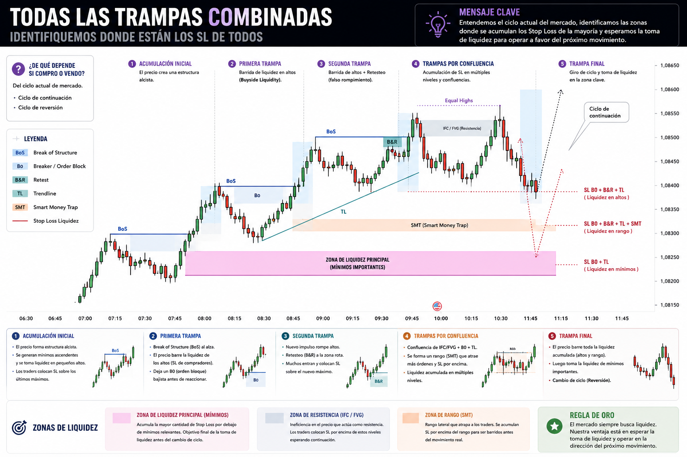
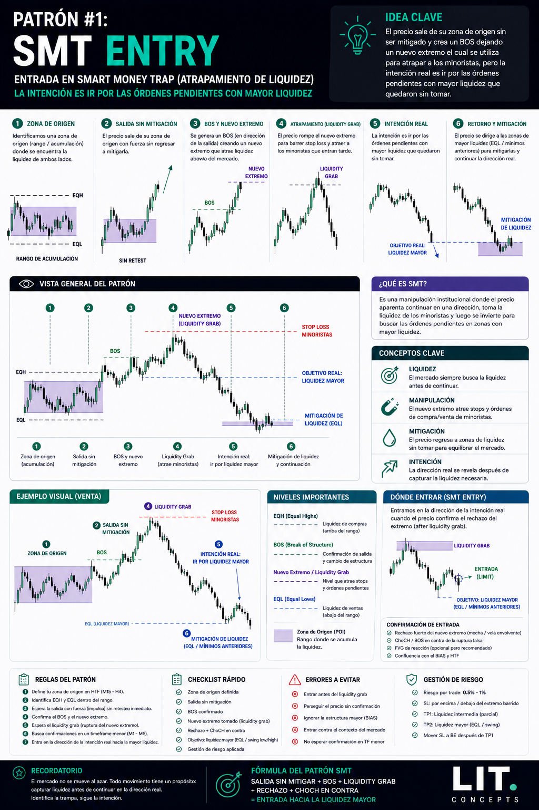
El precio sale de su zona de origen sin ser mitigado y crea un BOS dejando un nuevo extremo el cual se utiliza para atrapar a los minoristas, pero la intención real es ir por las órdenes pendientes con mayor liquidez.
Las instituciones usan el nuevo extremo para inducir compras o ventas minoristas y luego van por la liquidez real.
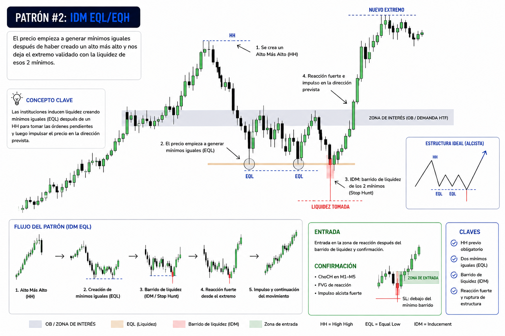
El mercado genera iguales máximos o mínimos acumulando liquidez antes de la expansión real.
Las instituciones utilizan los iguales máximos o mínimos como pools de liquidez antes del verdadero desplazamiento.
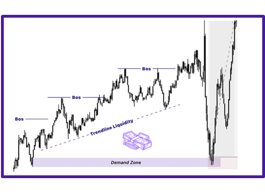
Entrada basada en barrer traders retail que compran o venden sobre una trendline evidente.
La trendline funciona como inducement retail y las instituciones aprovechan esa liquidez antes del movimiento real.
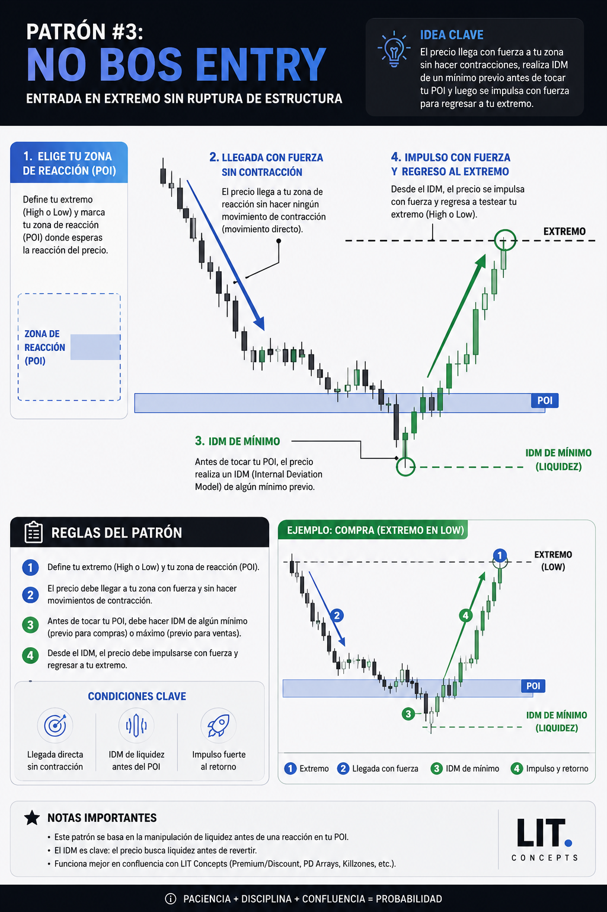
El precio llega violentamente al POI sin contracciones y reacciona directamente.
Cuando el mercado llega demasiado rápido al POI normalmente las instituciones ya tienen intención de reaccionar.
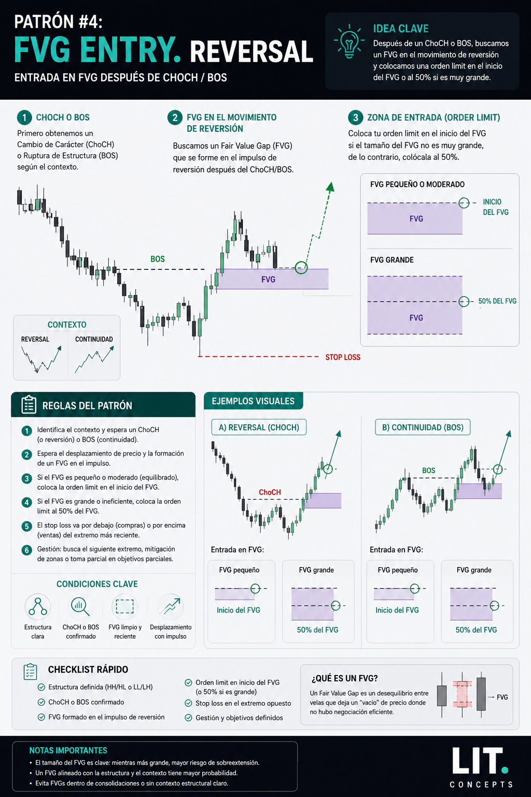
Entrada utilizando Fair Value Gap después de un ChoCh o BOS.
El FVG representa desequilibrio institucional y el mercado suele regresar para mitigar antes de continuar.
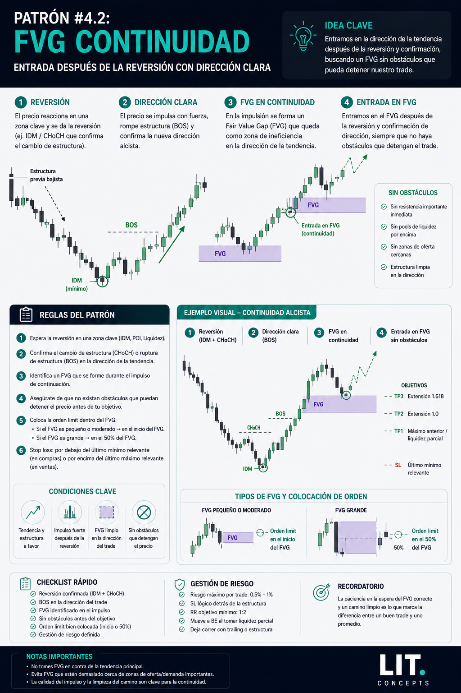
Modelo enfocado en continuar la tendencia institucional dominante.
Las instituciones utilizan mitigaciones parciales del FVG para seguir acumulando posiciones a favor de la tendencia.
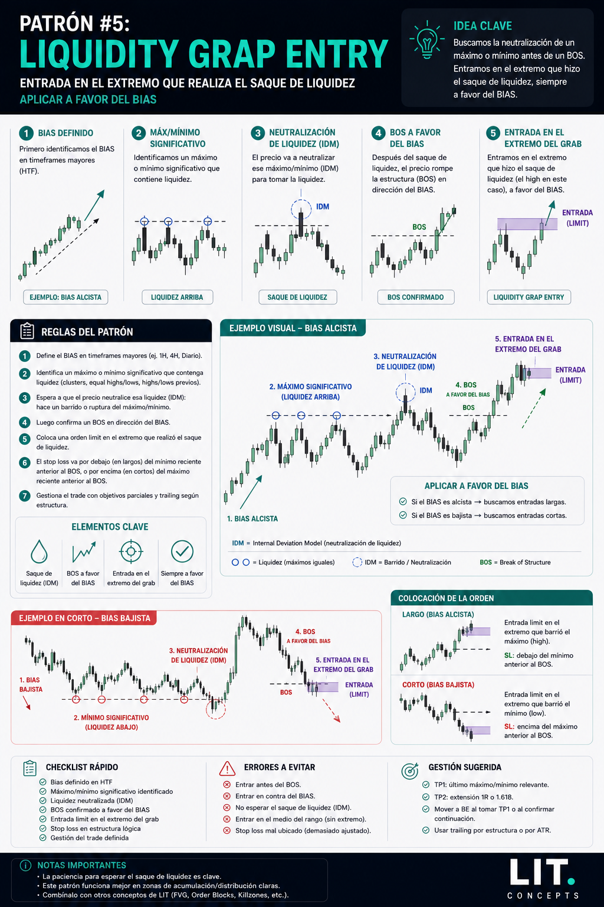
Entrada después de barrer máximos o mínimos antes de un BOS.
El mercado necesita tomar liquidez antes de generar el verdadero desplazamiento institucional.
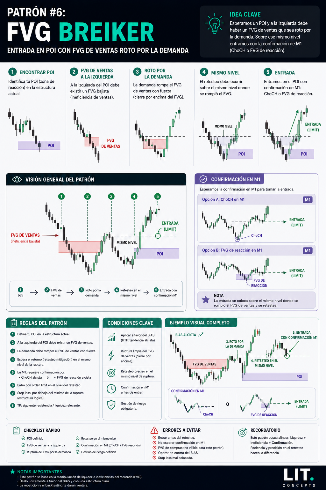
Un FVG opuesto es roto y reutilizado como nueva zona institucional.
Cuando un FVG contrario falla significa que el flujo opuesto perdió control institucional.
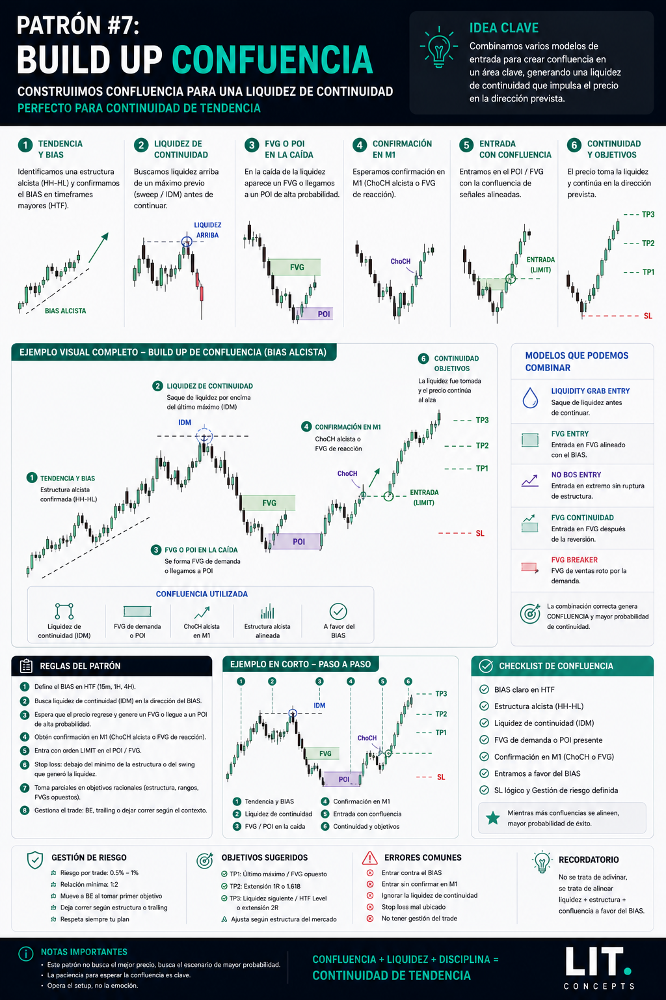
Acumulación de múltiples confluencias institucionales alineadas.
Mientras más confluencias se alineen en una dirección, mayor probabilidad tiene el continuation setup.
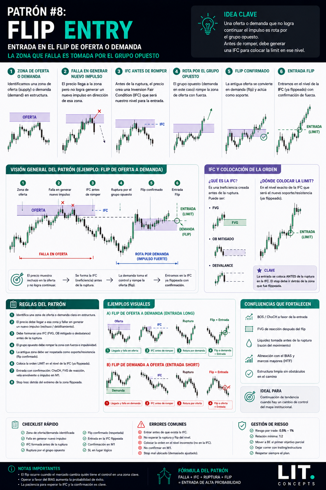
Una demanda u oferta falla y es absorbida por el flujo opuesto.
Cuando una zona institucional falla normalmente el flujo opuesto toma el control del mercado.
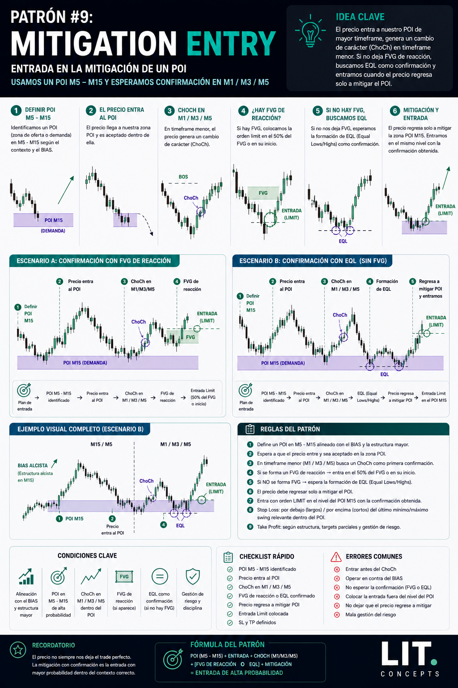
Entrada basada en mitigación institucional dentro de un POI HTF.
Las instituciones suelen regresar al POI para mitigar órdenes pendientes antes de continuar el movimiento.
Ejemplos visuales de ejecución bajista aplicando los modelos de entrada de la estrategia LIT & Trap Trading.
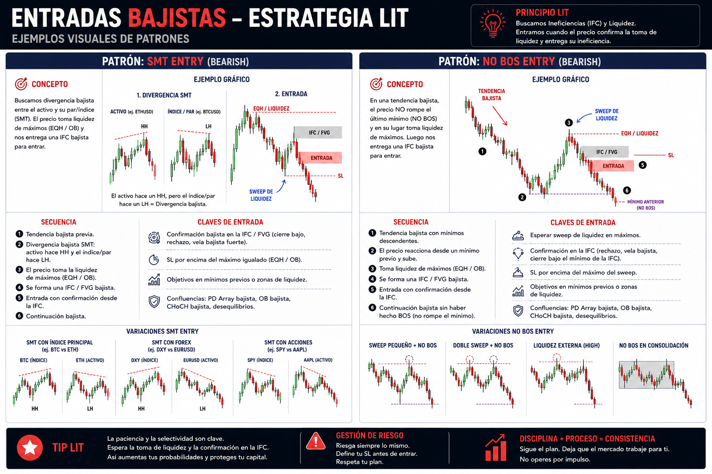
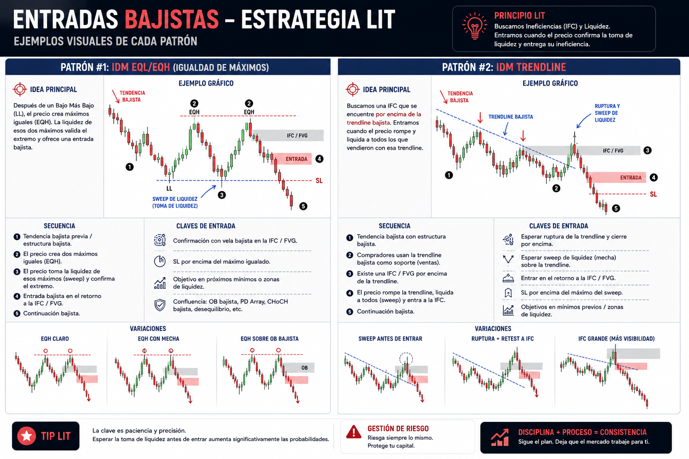
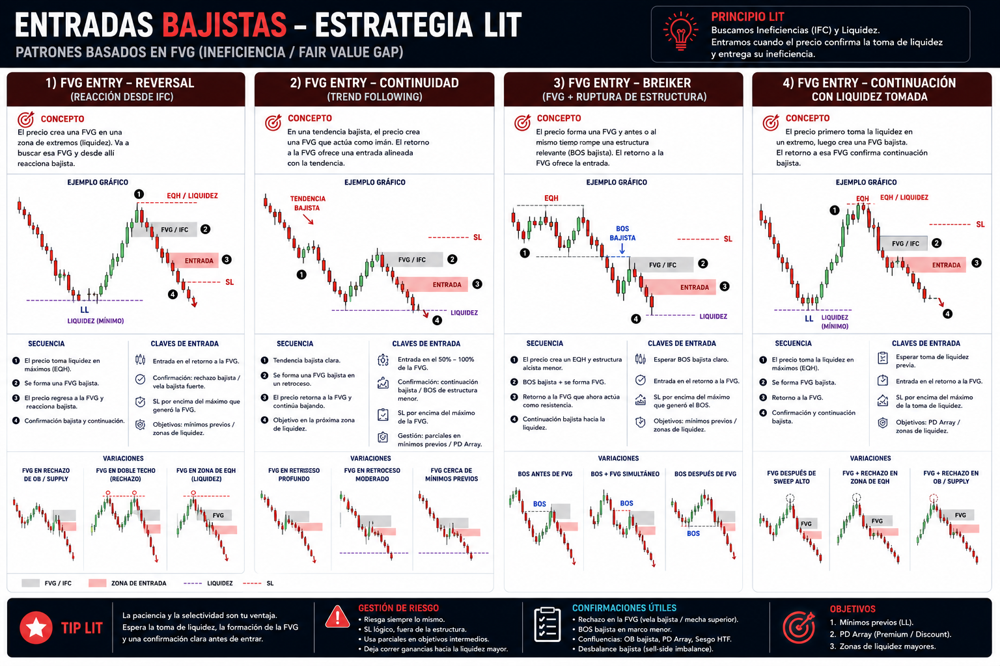
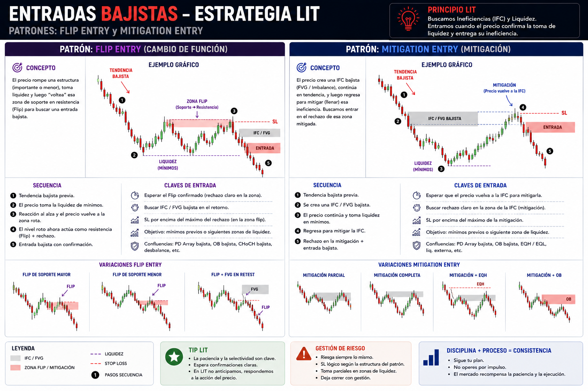
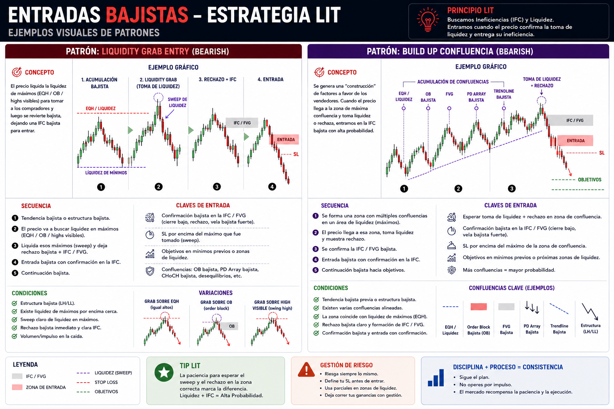